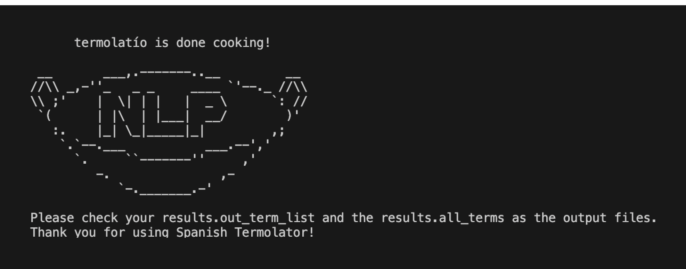

Contributors: Pauline Wee, Jhon Kim, and Levith Andrade Cuellar
The Termolator is an open-source terminology extraction system that identifies the most characteristic terms of a specialized set of documents when compared to a related but more general set of literature. This project seeks to address a significant gap in the Termolator’s coverage by adapting it to work for Spanish. The system so far works for English, Chinese, and French. As a final project for our Natural Language Processing class, we developed this adaptation of The Termolator and wrote an academic paper about it.
First, Termolatío scrapes background and foreground corpora from Spanish Wikipedia using Beautiful Soup. Then, it processes the articles through part of speech (POS) tagging, noun chunking, and distributional ranking with an adapted system from previous versions of the Termolator. When this process is complete, Termolatío outputs a ranked term list of the most characteristic terminology of the foreground when compared to the background.
When evaluated by a Spanish speaker for precision, Termolatío resulted in 67% precision for terms more related to the foreground than the background. However, further tests using a larger number of annotators and a wider test set need to be conducted in order to better benchmark Termolatío’s performance compared to other automatic terminology extraction (ATE) systems.
Termolatío can be used to identify the most characteristic terminology of a foreground set of documents when compared to a background, more general, set of documents. To use the system:
The command line interface is still under development to allow for seamless use. For the time being, please modify the codebase on your machine if necessary.
Here are some screenshots of the command line interface (CLI) that exemplify how Termolatío works.
Input: Termolatío's friendly robot mascot greets you and asks for your input files.
Output: Termolatío is "done cooking" and tells you what your result files have been named.
Termolatío does all of the hard work by leveraging a variety of Python files in the background which it runs via the run_termolator_spanish.sh bash file.